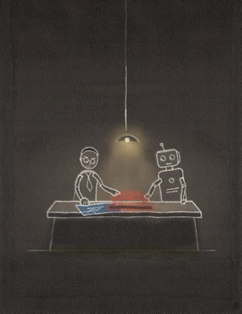

How do we safely grant autonomy to commodity intelligence?
Model-Based Agentic Software Engineering
Model-Based Agentic Software Engineering (MAGE) is an approach to software engineering for environments in which AI agents perform substantial implementation work. It asks what engineering knowledge should be made explicit, which obligations should have authority over autonomous work, and how recurring failures and judgment can be converted into durable engineering structure.
MAGE has two principles and a conversion loop: Modeling makes consequential knowledge and intent explicit; Alignment gives important engineering obligations authority; governance conversion turns recurring failures and judgment into structure that future work can inherit.
MAGE begins with an old software-engineering problem and a new economic condition. Large systems exceed the reasoning horizon of any one reasoner; commodity intelligence makes implementation cheap and abundant relative to engineering judgment. The result is a new imbalance—and an opportunity to move recurring engineering work into durable structure.
The six claims walk through the figure and summarize the argument.
Claim 1
Commodity intelligence changes the economics of software engineering.
Implementation capacity is becoming abundant relative to engineering judgment. As implementation gets cheaper, the scarce work increasingly lies elsewhere: deciding what to build, representing the system clearly enough to reason about it, producing evidence, and turning requirements into mechanisms the engineering environment can act on.
MAGE calls this increasingly cheap and scalable general-purpose machine capability commodity intelligence. The term describes an economic change, not a claim that intelligence is free, unlimited, or sufficient for engineering.
In the figure: Commodity intelligence → New engineering imbalance
Claim 2
Scale creates a reasoning problem.
The underlying problem is older than AI. Large software systems already exceed the reasoning horizon of individual humans; agents inherit the same problem. Software engineering has always answered scale with abstraction.
Commodity intelligence does not eliminate that need. It makes the representations that guide engineering work more important: without them, consequential knowledge must repeatedly be reconstructed from lower-level artifacts.
In the figure: Scale × finite reasoning → New engineering imbalance
Claim 3
Modeling makes engineering knowledge and intent explicit.
The Modeling Principle is to make engineering knowledge and intent explicit in purposeful models that preserve what an engineering question needs and leave out what it does not.
Models let humans and agents reason about larger properties without repeatedly reconstructing them from code. They also preserve degrees of freedom: making consequential knowledge explicit does not require specifying implementation choices that engineering has reason to leave open.
The Alignment Principle is to give important engineering obligations authority over autonomous work. Constraints restrict what may happen; sensors produce evidence; validators evaluate that evidence; gates decide what may advance.
Alignment can act directly on actions and artifacts—a sandbox, test, or permission boundary can enforce a local rule without a comprehensive model of the system. Explicit models extend what the environment can govern by making richer properties available to reasoning and checking.
In the figure: Alignment — the orange region → the Governed Engineering Environment
Governance conversion turns recurring judgment into durable engineering structure.
Autonomous work exposes missing knowledge, weak abstractions, and obligations that the environment cannot yet enforce. Fixing the immediate failure is necessary, but it does not prevent the same engineering work from being paid for again.
Governance conversion asks what future work should inherit from the lesson. Encode that knowledge or judgment in a model, packaged procedure, constraint, sensor, validator, gate, or other durable structure. When later work continues to benefit from that structure, it becomes engineering capital.
In the figure: the left-hand conversion loop; Engineering Capital vs. Engineering Churn
Engineering work will reorganize around what remains scarce.
As implementation becomes cheaper, more engineering effort moves toward representation, evidence, governance, coordination, and judgment — and agents may perform increasing portions of that work too.
The durable boundary is not a particular task or level of abstraction, but responsibility for what matters, what evidence is sufficient, which obligations should have authority, and what tradeoffs are acceptable. MAGE therefore treats the Governed Engineering Environment itself as an important object of engineering.
In the figure: the whole figure
Model what matters. Give obligations authority. Do the governed work. Convert what you learn into structure the next task inherits.
Resources
MAGE is available as a book, a body of writing, a curriculum, and a series of talks.

Book
The complete treatment of MAGE, from its motivation and principles through practice, evidence, and implications.
MAGE is a method rather than a prescribed toolchain. The site provides practical resources for applying its ideas to an existing engineering environment.
QuickStart
Install the MAGE skills and begin identifying recurring reconstruction, judgment, and governance gaps in an existing repository.
MAGE began with one production system observed in longitudinal depth and was then compared with independently described industrial systems. The originating case provides evidence about mechanism and sequence; the industrial cases provide variation and alternative realizations. These sources motivate and test the theory, but they do not establish universal laws.
DocAble — depth
The originating production system. Its development provides the longitudinal record from which the early MAGE concepts emerged.
Independent accounts from Cloudflare, Spotify, Shopify, Docker, Siemens, Zenseact, Uber, and GitLab, reconstructed through the MAGE vocabulary to examine recurring moves, variation, and limits.
MAGE is also a research program. Its claims raise empirical and technical questions about what engineering knowledge should be externalized, which obligations can be made authoritative, how governed environments evolve, and where human judgment remains necessary.